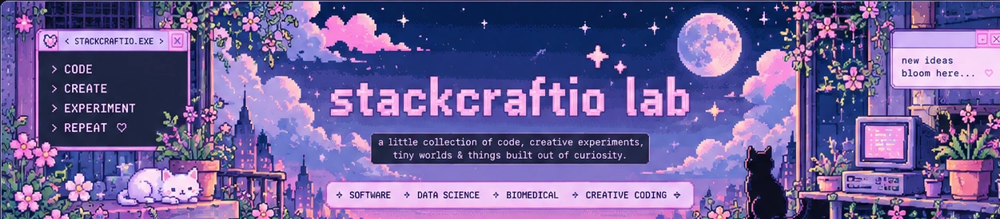

fun, creative & experimental projects. tiny applications, playful tools and little corners of the internet.
biomedical engineering, signal processing and data-driven health applications. turning signals into insight. ♡
ideas, experiments and future projects. a little space for the next adventures.